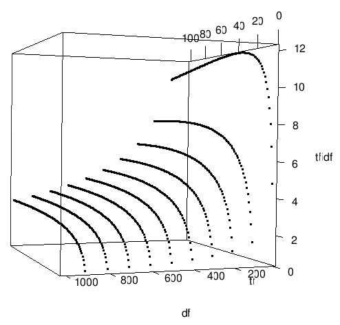

Document classification
The goal is to…
Zip file of all AI articles (stemmed documents)
Table of Contents
Evaluation criteria
- True positive (tp)
- chosen categories that are true categories
- False positive (fp)
- chosen categories that are not true categories
- False negatives (fn)
- true categories that are not chosen
Since these measures depend on the number of categories (chosen and true), and that differs per document, we calculate the following normalized scores:
- Precision
- \(tp/(tp+fp)\) — higher precision means the categories that were chosen were more often true categories
- Recall
- \(tp/(tp+fn)\) — higher recall means more of the true categories were chosen
We can achieve very high precision by only choosing categories for which we have very high confidence (until we nearly choose no categories at all); this would decrease recall, however. We can achieve high recall by choosing every category; this would decrease precision, however.
Best would be high precision and high recall. We can measure this by combining precision and recall into a single formula, called the “F-score”:
- F-score
- \(2*precision*recall / (precision + recall)\)
Notice that precision and recall are treated equally in this calcuation. Technically, the F-score is the harmonic mean of precision and recall.
Word stemming
In linguistic morphology and information retrieval, stemming is the process for reducing inflected (or sometimes derived) words to their stem, base or root form—generally a written word form. The stem need not be identical to the morphological root of the word; it is usually sufficient that related words map to the same stem, even if this stem is not in itself a valid root.
[…]
A stemmer for English, for example, should identify the string “cats” (and possibly “catlike”, “catty” etc.) as based on the root “cat”, and “stemmer”, “stemming”, “stemmed” as based on “stem”. A stemming algorithm reduces the words “fishing”, “fished”, “fish”, and “fisher” to the root word, “fish”. (Wikipedia)
Feature vectors
A document \(j\) is represented as:
$$X_j = (x_{j1}, x_{j2}, \dots, x_{jc}),$$where \(c\) is the count of unique words across all documents in the database. Thus, all documents have vectors of the same number of dimensions (\(c\) dimensions).
Binary features
Frequency count features
where \(tf_{ji}\) is the frequency (count) of the term in the document.
Normalized frequency count features
where \(\sum_{k} tf_{ki}\) is the number of terms (including repeats) in the document.
tf-idf
The document vectors described above all suffer from over-scoring common words. A common word like “the” does not give any evidence that one document is closely related to another one just because they both contain many instances of that word. So in addition to recording how often a term appears in a document, we need to divide out some measure of how common is the term across different documents. A term appearing in nearly every document is not as relevant as a term appearing in few. Additionally, if a rare term appears more often in a document, it is even more indicative of the content of that document.
Motivation
Suppose we have a set of English text documents and wish to determine which document is most relevant to the query “the brown cow.” A simple way to start out is by eliminating documents that do not contain all three words “the”, “brown”, and “cow”, but this still leaves many documents. To further distinguish them, we might count the number of times each term occurs in each document and sum them all together; the number of times a term occurs in a document is called its term frequency.
However, because the term “the” is so common, this will tend to incorrectly emphasize documents which happen to use the word “the” more frequently, without giving enough weight to the more meaningful terms “brown” and “cow”. The term “the” is not a good keyword to distinguish relevant and non-relevant documents and terms, unlike the less common words “brown” and “cow”. Hence an inverse document frequency factor is incorporated which diminishes the weight of terms that occur very frequently in the collection and increases the weight of terms that occur rarely. (Wikipedia)
The math
Every dimension (word) in the document vector has the following value:
$$x_{ji} = \log(tf_{ji} + 1) \log(n/df_j + 1),$$where \(j\) is the index of a word, \(i\) is the index of a document, \(x_{ji}\) is the value in position \(j\) (for word \(j\)) in the vector representing document \(i\), \(tf_{ji}\) is the frequency (count) of the term \(j\) in the document \(i\), \(n\) is the number of documents in the database, and \(df_j\) is the number of documents in the database that contain at least one occurrence of the term \(j\).

This graph shows the tf-idf value for a particular term in a document that comes from a database of 1,010 documents. The bottom axis is \(df\) (document frequency for that term); the top numbered axis (the “depth” axis) is \(tf\) or (term frequency; the number of times that term appears in the document under consideration); the right axis is the tf-idf value.
We see in the graph that an uncommon term (\(df\) is low) produces a higher tf-idf value. However, due to the use of logarithms, the tf-idf value grows little as the term appears more often in the document. In all, a term that’s appears several times in the document and is somewhat unique to the document is a strong indicator (of category membership, of relevance to a query containing that term, etc.).
k-nearest neighbor
With binary features
With frequency count features
With tf-idf
Comparing k-nearest neighbor solutions
Take-away lessons
- Good choices for what I am calling the “algorithm” (tf-idf, count with normalization, etc.) depends on the dataset. However, tf-idf is robust and works best on all datasets represented here. This is a significant result.
- Using a weighted voting technique is generally a good idea.
- Increasing \(k\) does not always increase performance.
- The best value for \(k\) depends on the the dataset and the algorithm.